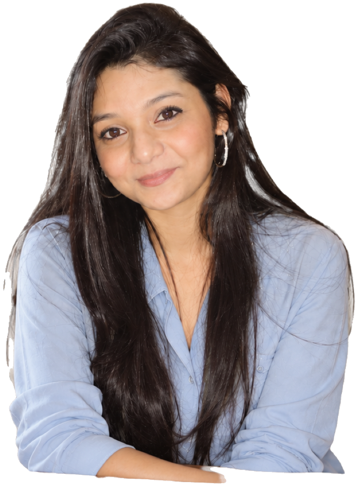

All four float harder than the live site and all four are Title Case. Scroll, watch them move, tell me a letter.
Option A
What you have now, floated harder. Same glass pill, twice the travel, and each one tilts a degree as it rises.

Option B
Small uppercase on solid white, squared corners. Reads like gallery labels rather than a keyword list.
Option C
Hairline outline, barely any fill, heavy blur. The portrait stays the loudest thing and the words sit on glass.
Option D
Seven quiet skills and one loud fact. The number goes navy and bigger, so the eye lands on the only line a stranger cannot claim.
Test page. Nothing links here and search engines are told to skip it. It comes down once you pick.